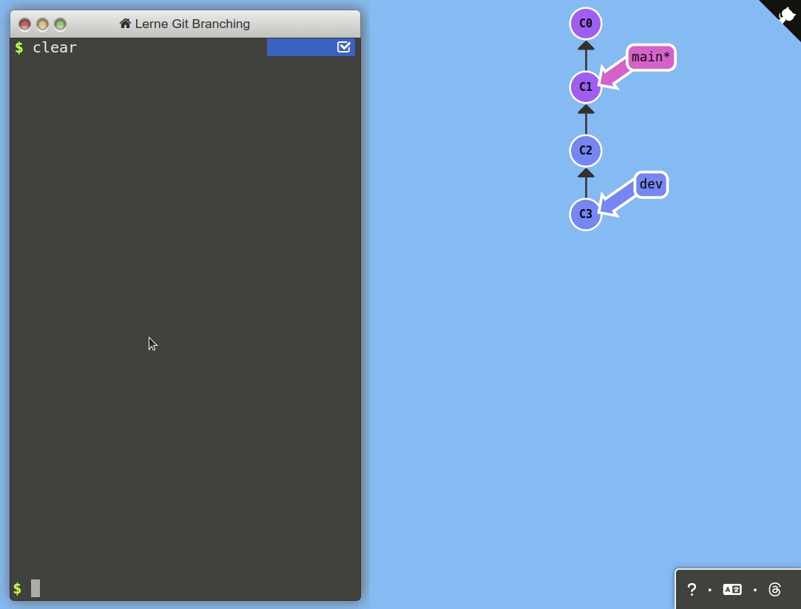

The notebook builds on our peer-reviewed pedagogical foundations. The interactive visualization and tutorial are based on the amazing learnGitBranching repository.
The notebook builds on our peer-reviewed pedagogical foundations. The interactive visualization and tutorial are based on the amazing learnGitBranching repository.
We  your feedback and suggestions on this notebook!
your feedback and suggestions on this notebook!
<strong>Concepts: Git branching</strong> <br><br>The slides explaining Git branching are <a href="../output/02-git.html#part-1-branching" target="_blank">here</a>.With this notebook, you can practice branching in Git.
| Practice | Label | Time (min) |
|---|---|---|
| 1 | Commit, branch, merge, rebase | 23 |
| 2 | Branching strategies | 5 |
| 3 | Merge methods | 40 |
| 4 | Wrap-up | 2 |
| Overall | 70 |
 We are here to help if errors or questions come up!
We are here to help if errors or questions come up!
We have covered git commit, as well as git branch, git switch, and git merge operations in the lecture.
Task: To practice branching and manipulating the Git graph, complete level 1 (introduction) of the learngitbranching{: target=“_blank”} tutorial.
Hints:
undo to undo the last commandgit commit without specifying a commit message.If you have completed Part 1 quickly, you may continue practicing with the following challenge.
Task: To continue practicing, create the following tree, which resembles a typical setup of Git branches. To do this, you can open learngitbranching{: target=“_blank”} in a separate window.

The following commands produce this particular graph:
git commit git commit git commit git checkout c1 git checkout-b hotfix git commit git checkout main git merge hotfix git checkout c1 git checkout -b dev git commit git commit git checkout c6 git checkout -b feature git commit git commit git checkout dev git merge feature git checkout main git merge dev
Analyze the Git graph with the different branches. Explain what happens as the project progresses.

This part focuses on different methods to integrate changes from one branch into another (aka. “merge methods”).
When running git merge other-branch, there are two options:


In addition to git merge, users also have the option to rebase changes. This preserves a linear version history* in the target branch instead of cluttering it with an array of merge commits:

There is another option: to squash changes from another branch. This effectively combines all changes from the other branch in a single commit, which is added on top of the target branch.
We will now practice the different methods in a real Git repository.
Task: Start GitHub Codespaces from the CoLRev repository{: target=“_blank”} and set up the quality_model_docs branch, using the following commands.
cd /workspaces/colrev
git checkout 108d278e8d01a65c5128c4a880247f0272896059
git switch -c quality_model_docs
# Remove the origin for better readability of the Git viewer
git remote remove origin<strong>Important:</strong> Make sure to copy the commands and enter them in the shell as shown in the screenshot. It is not possible to run the cells in this notebook.
<div style="clear: both;"></div>
<img src="../../material/codespace-shell.png" width="800"/>Task: Go through the following options, and run the commands. Take notes on the Git graph, i.e., the structure and IDs of commits, by completing the three Git graphs (you can open the page as a PDF):

To analyze the specific changes, open the Git GUI:

git switch main
git reset --hard 6f4299bdb0551c680a97dbe04b39dee51bcd0556
git merge quality_model_docsWait until the Git viewer is refreshed to display the merge commit and extract the commit SHAs.
git switch main
git reset --hard 6f4299bdb0551c680a97dbe04b39dee51bcd0556
git switch quality_model_docs
git rebase main
git switch main
git merge quality_model_docsgit switch main
git reset --hard 6f4299bdb0551c680a97dbe04b39dee51bcd0556
git merge --squash quality_model_docs
git commit -n -m 'update docs for quality_model'Task: Compare the three Git graphs and the commit IDs. What are the differences between the three methods in terms of the contents of commits and their metadata?
Note: All three methods change the state of the main branch. None changes the state of the quality branch. The commit IDs in your solution will differ.

Question: Why does the merge commit always have a different ID if another student creates it or if you run the same commands a few seconds later?
The commit object always contains the commit author and date. If they differ, Git generates a different commit SHA from the content and metadata.
Note: You can use the merge methods in a Codespace environment (as you just did), in a local Git repository, and even online on GitHub:
üéâüéà You have completed the Git branching notebook - good work! üéàüéâ
In this notebook, we have learned
git commit, git branch, git switch, and git merge commands